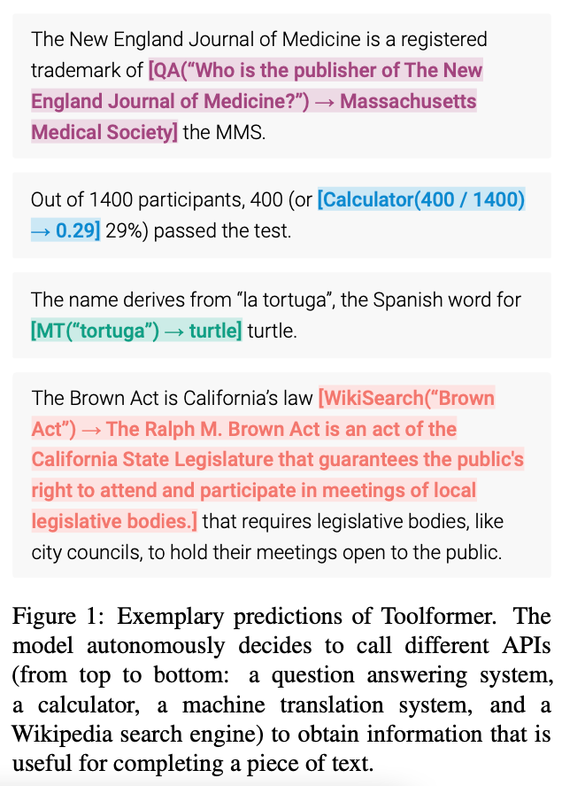
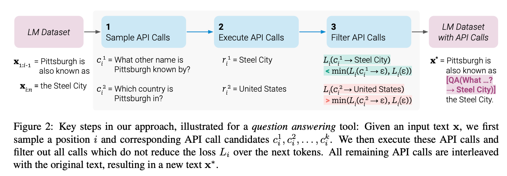
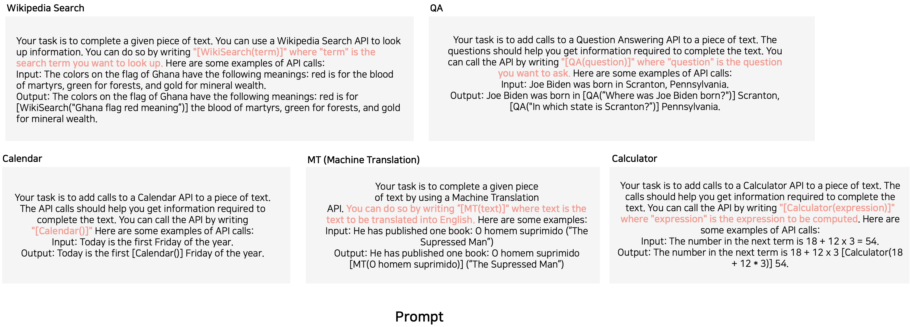
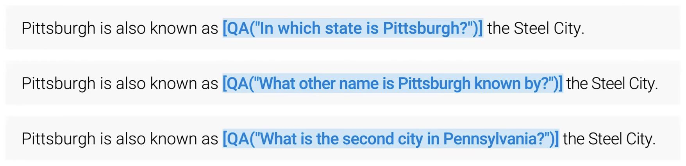
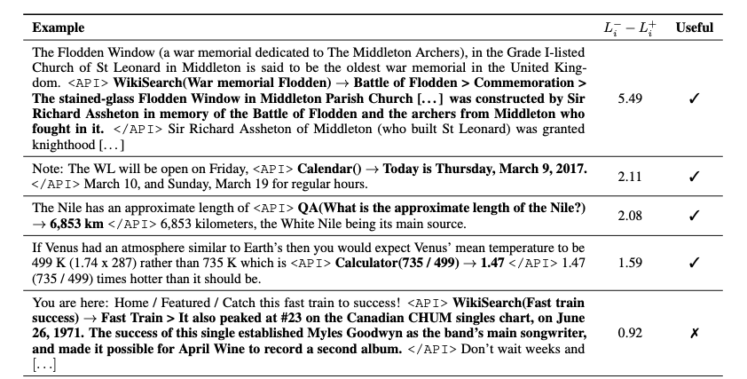
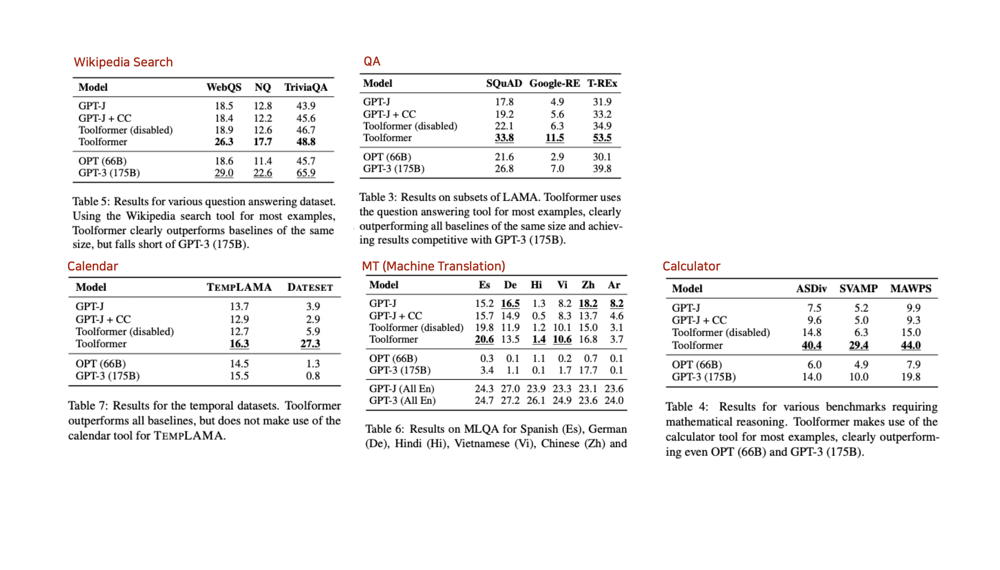

Toolformer: Language Models Can Teach Themselves to Use Tools#
Overview#
Meta AI 2022
공식 구현 X
LLM(GPT-J, 6B)가 언제/어떤 API를 어떻게 호출할지 스스로 결정하는 방법
self-supervised 방식으로 데이터를 쉽게 생성함
총 5가지의 Tool(API)를 사용
QA(RAG), Wikipedia Search, Calculator, Calendar, MT(Machine Translation) 
Introduction#
LLM이 가지고 있는 기본 한계
최신 정보 활용, 환각
저자원 언어 이해
수학 스킬
시간 경과 (오늘, 내일 등)
이를 해결 하기 위한, 가장 간단한 방법은 외부 tool을 사용 하는 방법
최근 Tool을 사용하는 방법은 다음과 같은 한계
사람의 labeling 필요.
또한 Tool이 고정되어 있어 다양한 Tool를 사용 불가
따라서 Toolformer에서는 Self-supervised 방식으로 직접 데이터 셋을 만들어 학습에 활용하고, 5개의 Tools을 사용할 수 있도록 함.
Method#
ToolFomrer 목표
Self-supervised 방식으로 사람의 Labeling 필요 X
API call을 호출할 수 있는 LLM model M을 만드는 것.
언제 / 무엇을 / 어떻게 사용할지를 결정
위의 목표를 수행하기 위해서 1) Annotation -> 2) Filtering -> 3) FT(Fine Tuning) 
여기서는 API calls을 다음과 같이 linearlize해서 나타냄
\(\<API> a_c(i_c) -> r \</API>\)
-> , <API>, </API> s는 모두 special toekn
원래 데이터 셋 \(C\) 가 주어지면, 위의 표현 API calls로 Augmented 된 \(C'\) 를 생성 후, \(C'\)을 활용해 LLM을 FT
1. Sample API Calls#
가장 첫번째 API를 언제 부를지 결정
즉 input x에 대해서 언제 API call를 하는 게 확률이 높은지 대해서 계산을 진행
Few-shot prompt(하단 참고)를 활용해서 input x에 대해 API call를 annotate 
이때 모든 위치 \(i\)에 대해서 모두 진행 (모든 API 종류에 대해서) 그 후 확률 값으로 필터링 진행 후 API 호출(최대 Top-k개)
\(p_i = p_M(\<API> | P(x), x_{1:i-1})\)
\(I = {i|p_i > \tau_s}\)
API calls 위치에 최대 M개의 다른 API calls 생성
최대 5 * k (위치 최대 개수) * m(sampling 개수)개 생성.
이때 형식이 안맞는 것은 discard

2. Execute API Calls#
1번의 과정으로 얻은 모든 potentail API calls 실행해서 결과 얻어옴
각 tools에 따라 다른 실행과정 (Appendix 참고)
3. Filter API Calls#
1, 2번에서 API calls를 포함한 데이터 셋을 만들었다면 그 데이터 셋을 필터링하는 과정
Loss 값 활용
API call과 response가 모델에 주어진 경우의 Loss와 반대되는 Loss를 비교해서 필터링 진행
\(L_i^+ = L_i(e(c_i, r_i))\)
\(L_i^- - min(L_i(\varnothing), L_i(e(c_i, \varnothing))\)
반대되는 로스(-) 는 API call이 없는 경우, reponse가 없는 경우 중에 작은 걸 선택
두 개의 Loss 차이가 일정 임계값보다 넘으면 선택 진행
\(L_i^- - L_i^+ \geq \tau_f\) 
4. Finetune LLM with augmented dataset(with API calls)#
앞선 단계를 다 거친 후 최종 API call과 원래의 input을 합쳐서 새로운 \(C'\) 데이터 셋 생성
\('C'\)와 \(C\)는 API call 부분을 제외하고, 원래 text와 동일함
LLM이 사전학습때 본 데이터, 사전학습때 사용한 학습 방식으로 친숙함.
\(C'\)을 활용해서 FT 진행
Experiment#

Conclusion#
self-supervised 방법으로 데이터를 쉽게 생성하고, 필터링을 적용해서 퀄리티가 보장되는 것 처럼 보임.
실제로 데이터 생성 퀄리티를 실험 예정
이미 LLM이 잘하는 다음 단어 맞추기로 FT를 진행함